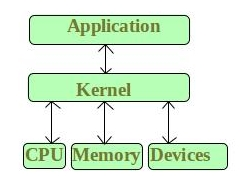
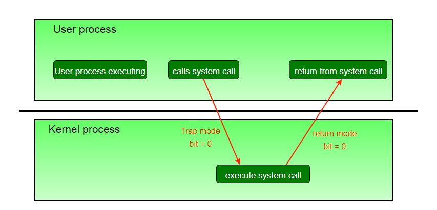

Kernel is the core part of an operating system which manages system resources. It also acts like a bridge between application and hardware of the computer. It is one of the first programs loaded on start-up (after the Bootloader).

Kernel mode and User mode of CPU operation
(Thanks Sulbha Sharma for contributing this section)
The CPU can execute certain instruction only when it is in the kernel mode. These instruction are called privilege instruction. They allow implementation of special operation whose execution by the user program could interface with the functioning of operating system or activity of another user program. For example, instruction for managing memory protection.
- The operating system puts the CPU in kernel mode when it is executing in the kernel so, that kernel can execute some special operation.
- The operating system puts the CPU in user mode when a user program is in execution so, that user program cannot interface with the operating system program.
- User-level instruction does not require special privilege. Example are ADD,PUSH,etc.

The concept of modes can be extended beyond two, requiring more than a single mode bit CPUs that support virtualization use one of these extra bits to indicate when the virtual machine manager, VMM, is in control of the system. The VMM has more privileges than ordinary user programs, but not so many as the full kernel.
System calls are typically implemented in the form of software interrupts, which causes the hardware’s interrupt handler to transfer control over to an appropriate interrupt handler, which is part of the operating system, switching the mode bit to kernel mode in the process. The interrupt handler checks exactly which interrupt was generated, checks additional parameters ( generally passed through registers ) if appropriate, and then calls the appropriate kernel service routine to handle the service requested by the system call.
User programs’ attempts to execute illegal instructions ( privileged or non-existent instructions ), or to access forbidden memory areas, also generate software interrupts, which are trapped by the interrupt handler and control is transferred to the OS, which issues an appropriate error message, possibly dumps data to a log ( core ) file for later analysis, and then terminates the offending program.
What is Microkernel?
Microkernel is one of the classification of the kernel. Being a kernel it manages all system resources. But in a microkernel, the user services and kernel services are implemented in different address space. The user services are kept in user address space, and kernel services are kept under kernel address space, thus also reduces the size of kernel and size of operating system as well.

It provides minimal services of process and memory management. The communication between client program/application and services running in user address space is established through message passing, reducing the speed of execution microkernel. The Operating System remains unaffected as user services and kernel services are isolated so if any user service fails it does not affect kernel service. Thus it adds to one of the advantages in a microkernel. It is easily extendable i.e. if any new services are to be added they are added to user address space and hence requires no modification in kernel space. It is also portable, secure and reliable.
Microkernel Architecture –
Since kernel is the core part of the operating system, so it is meant for handling the most important services only. Thus in this architecture only the most important services are inside kernel and rest of the OS services are present inside system application program. Thus users are able to interact with those not-so important services within the system application. And the microkernel is solely responsible for the most important services of operating system they are named as follows:
- Inter process-Communication
- Memory Management
- CPU-Scheduling
Advantages of Microkernel –
- The architecture of this kernel is small and isolated hence it can function better.
- Expansion of the system is easier, it is simply added in the system application without disturbing the kernel.
Eclipse IDE is a good example of Microkernel Architecture.
Read next – Monolithic Kernel and key differences from Microkernel